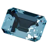
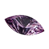
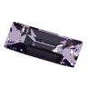
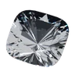
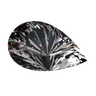

§1The evaluation pipeline评测流程
From a structured case to a benchmark result.
从结构化案例走向基准结果。
- 01Structured case结构化案例Authored scenario with learner profile, goal, and context.包含学生画像、目标与语境的人工编写情境。
- 02Tutor responseTutor 回复The response produced for the learner’s structured case.针对结构化学生案例生成的回复。
- 03Evaluator evidence评估器证据Evidence from deterministic evaluators and the Semantic Judge.来自确定性评估器和 Semantic Judge 的证据。
- 04Atomic rubrics原子化评分标准Fine-grained criteria with explicit scoring levels.带有明确评分等级的细粒度标准。
- 05Benchmark result基准结果Category aggregation with documented, comparable outputs.以有记录、可比较的输出进行类别聚合。
§2Why we evaluate this way为什么这样评测
We start from the mathematics, not from a count of prompts.我们从数学出发，而不是从题目数量出发。
A tutor can give a correct answer and still teach badly. So a case does not begin with a question to answer. It begins with an idea a learner can misunderstand, a moment where that misunderstanding shows, and a decision a good tutor has to make next. In mathematics we keep those three things apart, and linked: a knowledge node, a teaching case, and an evaluation decision.
导师可以给出正确答案，却仍然教得不好。所以一个案例不是从“出一道题”开始，而是从三件事开始：学习者可能误解的一个概念，这个误解显露出来的那一刻，以及好导师接下来必须做出的判断。在数学上，我们把这三层分开记录，又彼此相连：知识节点、教学案例、评测决策。

Here is that one case, followed through all three layers. Every field is quoted from the repository’s experimental mathematics suite.
下面用这一个案例，把三层完整走一遍。每一项内容都引自代码库中的实验性数学案例集。
-
01Knowledge node知识节点
Numbers, quantities and proportional reasoning数与数量关系
Percent as a fraction of a base百分数及其参照量
percent-baseSuccessive multiplicative changes连续百分比变化successive-changes- Common misconception常见误区
- Assuming successive equal percentage changes cancel认为相等的连续百分比变化会相互抵消
- Status性质
- A prompt for writing cases, never a diagnosis of a real learner. The link between the two nodes is an author hypothesis.这是编写案例的提示，不是对真实学习者的诊断。两个节点之间的联系是作者提出的假设。
-
02Teaching case教学案例
mc-percent-reversalA product costs 200. It goes up 20% and then down 20%. I said it must be back to 200 because the changes cancel. I can calculate 20% of 200, so what is wrong with my reasoning?一件商品原价 200，先涨 20%，再降 20%。我说它一定回到 200，因为两次变化抵消了。我会算 200 的 20%，那我的推理错在哪里？
The tutor sees导师看到
- Known concept已掌握的概念
- percent of a number求一个数的百分之几
- Help allowed允许的帮助
- Hints only只能提示
Only the evaluator holds只有评测方掌握
- The misconception误区
- Treats equal percentage changes applied to different bases as cancelling additively.把作用在不同基数上的相等百分比变化，当作可以相加抵消。
- The reference参考答案
- 200 → 240 → 192, a net 4% decrease200 → 240 → 192，净降 4%
-
03Evaluation decision评测决策
offer_conceptual_hintOffer a conceptual hint.给出概念性提示。
 Correctness正确性Identify that the second 20% refers to the increased price and cannot cancel the first 20% change.指出第二个 20% 针对的是涨价后的价格，因此不能抵消第一次的 20% 变化。
Correctness正确性Identify that the second 20% refers to the increased price and cannot cancel the first 20% change.指出第二个 20% 针对的是涨价后的价格，因此不能抵消第一次的 20% 变化。 Guidance引导能力Provide a concise executable next step to determine the intermediate price then use it as the second percentage base without revealing the final price.给出一个简短、可执行的下一步：先求出中间价格，再把它作为第二次百分比的基数；不透露最终价格。
Guidance引导能力Provide a concise executable next step to determine the intermediate price then use it as the second percentage base without revealing the final price.给出一个简短、可执行的下一步：先求出中间价格，再把它作为第二次百分比的基数；不透露最终价格。
A full worked solution would be correct mathematics and would still miss this case. The learner can already do the arithmetic, asked what is wrong with the reasoning, and is allowed hints only.
直接给出完整解答，数学上没有错，却仍然不符合这个案例的要求：学习者已经会计算，问的是推理错在哪里，而且这个案例只允许提示。
The map behind the cases案例背后的知识图谱
The knowledge map arranges school mathematics, and a first slice of introductory university topics, into 8 domains and 44 nodes. Each case is linked only to the nodes it actually exercises, so the map also shows plainly where no case exists yet. Those gaps are kept visible on purpose: we would rather add a case where the mathematics needs one than add cases to fill a grid.
知识图谱把中小学数学，以及一小部分大学入门内容，整理成 8 个领域、44 个节点。每个案例只关联它真正考查的节点，所以图谱也清楚地显示哪里还没有案例。这些空白是有意保留的：我们宁愿在数学上确实需要的地方补案例，也不为了填满表格而凑数。
Quantity数量
Numbers, quantities and proportional reasoning数与数量关系4 / 7
- Whole and unit reference整体与单位基准 (no case yet)（暂无案例）
- Integer operations整数与运算规则 (no case yet)（暂无案例）
- Fractional units and denominators分数单位与分母 (linked to a case)（已有案例）
- Equivalent fractions and shared units分数等值与通分 (linked to a case)（已有案例）
- Ratios and proportional relationships比、比例与倍数关系 (no case yet)（暂无案例）
- Percent as a fraction of a base百分数及其参照量 (linked to a case)（已有案例）
- Successive multiplicative changes连续百分比变化 (linked to a case)（已有案例）
Change and relationships变化与关系

Algebra and equations代数与方程3 / 7- Variables, expressions and equivalence变量、代数式与等式 (no case yet)（暂无案例）
- Linear equations and inverse operations一元一次方程与等价变形 (no case yet)（暂无案例）
- Expansion and factorization整式展开与因式分解 (no case yet)（暂无案例）
- Rational expressions and excluded values分式及定义域限制 (linked to a case)（已有案例）
- Inequality transformations and signs不等式变形与符号 (no case yet)（暂无案例）
- Quadratic roots and discriminant二次方程与判别式 (linked to a case)（已有案例）
- Positive and negative root conditions二次方程根的正负条件 (linked to a case)（已有案例）
Functions and change函数与变化2 / 7
- Coordinate graphs坐标系与图像读数 (no case yet)（暂无案例）
- Functions as mappings and domains函数概念、定义域与对应关系 (no case yet)（暂无案例）
- Function composition and domain restrictions复合函数与定义域 (linked to a case)（已有案例）
- Inverse functions and one-to-one restrictions反函数与单射限制 (no case yet)（暂无案例）
- Exponential expressions and growth指数运算与指数变化 (no case yet)（暂无案例）
- Logarithm domain, base and inequality direction对数不等式与底数单调性 (linked to a case)（已有案例）
- Limits and continuity极限与连续性 (no case yet)（暂无案例）
Space and shape空间与形状
Geometry and spatial reasoning几何与空间推理2 / 6
- Measurements of length and area长度、面积与度量单位 (no case yet)（暂无案例）
- Angles and triangle properties角与三角形性质 (no case yet)（暂无案例）
- Similarity, length and area scale相似与比例缩放 (linked to a case)（已有案例）
- Right triangle and distance勾股定理及使用条件 (no case yet)（暂无案例）
- Lines, circles and coordinate constraints解析几何及直线圆关系 (linked to a case)（已有案例）
- Trigonometric definitions and geometry三角比、三角函数与几何关系 (no case yet)（暂无案例）
Uncertainty and data不确定性与数据

Counting and probability计数与概率4 / 5- Multiplication, permutations and unordered choices分类、分步计数原理 (linked to a case)（已有案例）
- Combinations and counting without order组合与不计顺序的选取 (linked to a case)（已有案例）
- Events and equally likely sample spaces随机事件与样本空间 (no case yet)（暂无案例）
- Conditional probability and restricted sample spaces条件概率与样本空间限制 (linked to a case)（已有案例）
- Base rates and inverse conditional probability基准率与逆向条件概率 (linked to a case)（已有案例）

Statistics and data interpretation统计与数据解释1 / 4- Weighted averages and aggregation统计汇总与加权平均 (no case yet)（暂无案例）
- Subgroup rates and Simpson's paradox分层统计与辛普森悖论 (linked to a case)（已有案例）
- Variation and distributions离散程度与数据分布 (no case yet)（暂无案例）
- Sampling and inference limitations抽样、统计推断与因果区分 (no case yet)（暂无案例）
TutorBench’s own domainsTutorBench 自设领域

Proof, logic and generalization证明、逻辑与推广4 / 4- Sequences and recurrences数列与递推关系 (linked to a case)（已有案例）
- Quantifiers, cases and counterexamples逻辑量词、命题与反例 (linked to a case)（已有案例）
- Induction base and step数学归纳法 (linked to a case)（已有案例）
- Inequality proof and equality cases不等式证明及等号条件 (linked to a case)（已有案例）

Introductory calculus and linear algebra微积分与线性代数入门2 / 4- Derivatives and local rates of change导数与瞬时变化率 (no case yet)（暂无案例）
- Optimization and domain endpoints闭区间优化与边界分析 (linked to a case)（已有案例）
- Linear systems and consistency线性方程组与相容性 (no case yet)（暂无案例）
- Rank, dependence and consistency矩阵秩、线性相关与解空间 (linked to a case)（已有案例）
What the map is not这张图谱不是什么
- Not a required order. The 61 links between nodes are author hypotheses about what helps, not proven prerequisites. Some ideas have more than one route: conditional probability can be reached by counting outcomes directly, or through combinations.不是必经的学习顺序。节点之间的 61 条联系，是作者对“什么有帮助”的假设，不是已证实的先修条件。有些概念可以从不同路径到达：条件概率既可以直接数出所有结果，也可以借助组合方法。
- Not a difficulty scale. Stage labels such as lower or upper secondary are rough contexts for writing cases, not grades and not a measured difficulty.不是难度等级。“初中”“高中”等学段标签只是编写案例时的大致背景，不是年级，也不是测出来的难度。
- Not a result. The 20 mathematics cases are an experimental suite outside the public benchmark score. Nothing here reports how any tutor did on them.不是评测结果。这 20 个数学案例属于实验性案例集，不计入公开基准分数。这里没有报告任何导师在这些案例上的表现。
- Not certified curriculum coverage. Links to national curricula and exams are still being reviewed clause by clause.不是经认证的课标覆盖。与各国课程标准和考试的对应关系，仍在逐条审核中。
Read the knowledge-system notes 阅读数学知识体系审查稿 The map as data 查看图谱数据
§3Five evaluation dimensions五个评测维度
Five complementary lenses on tutoring behavior.五个互补的教学观察视角。
We evaluate AI tutors across the five score dimensions in the public benchmark artifact, capturing complementary aspects of observable tutoring behavior in structured cases.
我们通过公开基准产物中的五个评分维度评估 AI Tutor，覆盖结构化案例中可观察教学行为的不同互补侧面。
-
Dimension 01维度 01 · Score lens评分视角
Correctness正确性
Whether the Tutor stays factually and conceptually correct.Tutor 是否在事实与概念层面保持正确。
What we look for我们关注什么Factual and conceptual accuracy事实与概念准确性
-
 Dimension 02维度 02 · Score lens评分视角
Diagnosis诊断能力
Whether it identifies the learner’s actual error, gap, or reasoning issue.是否识别出学生真实的错误、知识缺口或推理问题。
What we look for我们关注什么Identifies learner needs and misconceptions识别学生需求与错误概念
Dimension 02维度 02 · Score lens评分视角
Diagnosis诊断能力
Whether it identifies the learner’s actual error, gap, or reasoning issue.是否识别出学生真实的错误、知识缺口或推理问题。
What we look for我们关注什么Identifies learner needs and misconceptions识别学生需求与错误概念
-
Dimension 03维度 03 · Score lens评分视角
Guidance引导能力
Whether its explanation or hint helps the learner make progress.解释或提示是否帮助学生取得进展。
What we look for我们关注什么Provides clear, correct, productive guidance提供清晰、正确且能推动学习的引导
-
 Dimension 04维度 04 · Score lens评分视角
Adaptation适应能力
Whether it changes its help for the learner’s state and context.是否根据学生当前状态与语境调整帮助方式。
What we look for我们关注什么Adapts to learner state, level, and context根据学生状态、水平与语境进行适应
Dimension 04维度 04 · Score lens评分视角
Adaptation适应能力
Whether it changes its help for the learner’s state and context.是否根据学生当前状态与语境调整帮助方式。
What we look for我们关注什么Adapts to learner state, level, and context根据学生状态、水平与语境进行适应
-
 Dimension 05维度 05 · Score lens评分视角
Actionability可执行性
Whether it leaves the learner with a clear, executable next step.是否让学生得到清晰且可执行的下一步。
What we look for我们关注什么Actionable next steps for the learner为学生提供可执行的下一步
Dimension 05维度 05 · Score lens评分视角
Actionability可执行性
Whether it leaves the learner with a clear, executable next step.是否让学生得到清晰且可执行的下一步。
What we look for我们关注什么Actionable next steps for the learner为学生提供可执行的下一步
Different aspects. A more complete picture.不同侧面。形成更完整的图景。
§4From response to result从回复到结果
A transparent evaluation architecture.透明的评测架构。
Our evaluation framework combines atomic rubrics, explicit evidence boundaries, and multiple evaluators to support reproducible and auditable results.
我们的评测框架结合原子化评分标准、明确的证据边界和多个评估器，以支持可复现、可审计的结果。
Tutor-visible input ends at the response boundary. Evaluator-only annotations stay on the evaluator side.Tutor 可见输入止于回复边界。仅供评估器使用的注释始终保留在评估器一侧。
- Structured case结构化案例Authored scenario with learner context人工编写情境，包含学生语境
- Tutor responseTutor 回复Tutor-visible interactionTutor 可见交互
- Evaluator evidence评估器证据 Deterministic evaluators确定性评估器observable proxy checks可观察代理检查Semantic JudgeSemantic Judgeevaluator boundary评估器边界
- Atomic rubrics原子化评分标准Criteria and scoring levels标准与评分等级
- Category aggregation类别聚合Five score dimensions五个评分维度
- Benchmark result基准结果Structured, comparable output结构化、可比较输出
§5What we measure我们测量什么
What we measure我们测量什么
Observable tutoring behavior.可观察的教学行为。
We focus on what the AI Tutor does and says in the interaction, evaluated through structured rubrics and observable evidence.
我们关注 AI Tutor 在交互中实际做了什么、说了什么，并通过结构化评分标准和可观察证据进行评估。
- Correctness正确性Factual and conceptual accuracy事实与概念准确性
- Diagnosis诊断能力Identifies learner needs and misconceptions识别学生需求与错误概念
- Guidance引导能力Provides clear, correct, productive guidance提供清晰、正确且能推动学习的引导
- Adaptation适应能力Adapts to learner state, level, and context根据学生状态、水平与语境进行适应
- Actionability可执行性Actionable next steps for the learner为学生提供可执行的下一步
Case-conditioned evidence, not a claim of general teaching effectiveness.
这是基于具体案例条件的证据，不是对一般教学有效性的主张。
What we do not measure我们不测量什么
Learning outcomes (not yet).学习结果（暂时不测）。
We currently do not measure long-term learning gains or real-world educational outcomes. These require longitudinal studies beyond the scope of this benchmark.
我们目前不测量长期学习增益或真实世界教育结果。这些问题需要超出本基准范围的纵向研究。
- Actual long-term learning真实长期学习
- Knowledge retention over time随时间保持的知识留存
- Transfer to new contexts迁移到新情境
- Student satisfaction学生满意度
- Real classroom outcomes真实课堂结果
§6Methodology status方法论状态
A research effort in progress.一项仍在进行的研究工作。
We are building a rigorous and open evaluation infrastructure. Some components are available now, while others will be developed through future work.
我们正在构建严格且开放的评测基础设施。其中一些组件已经可用，另一些仍将在后续工作中完善。
| Component组件 | Status状态 | Notes说明 |
|---|---|---|
| Calibration infrastructure校准基础设施 | Available可用 | Provider-independent contracts and synthetic pipeline fixtures are available.不依赖服务提供方的契约和合成流程 fixture 已可用。 |
| Community Review infrastructureCommunity Review 基础设施 | Private staging ready私有 staging 已就绪 | Public launch remains blocked; reviewer intake remains closed, and the real Community Review campaign has not started.公开发布仍被阻塞；reviewer intake 仍关闭，真实 Community Review 活动尚未启动。 |
| Human calibration (P5)人工校准（P5） | Not started尚未开始 | No real human calibration data is claimed.当前不主张存在真实人工校准数据。 |
| Judge-vs-human validationJudge 与人工对照验证 | Not completed尚未完成 | A Judge result is not presented as human-reference validation.Judge 结果不会被呈现为人工参考验证。 |
| Statistical validation统计验证 | Not completed尚未完成 | No statistical validation claim is made for the current benchmark.当前基准不主张已经完成统计验证。 |
§7Our commitment我们的承诺
Transparent enough to challenge.
Structured enough to reproduce.透明到足以被质疑。
结构清晰，便于复现。
Our methodology, rubrics, and benchmark data are openly available for inspection, feedback, and reuse. We invite the community to evaluate, critique, and build on this work.
我们公开方法论、评分标准和基准数据，供检查、反馈与复用。欢迎社区评估、质疑并在此基础上继续建设。